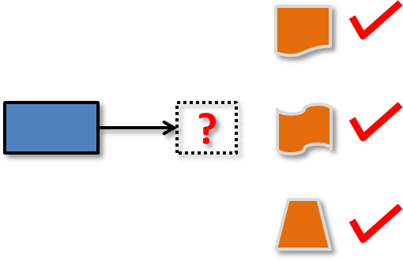

Lecture 5: Advanced OOP, Requirements
Pre-lecture activity
Imagine you are building an online system called TeamFormer. TeamFormer is a system for helping CS2103 students during team forming period. It lets students record who is in which team. Students can use the system to find teams short of members and students looking for teams, easing the team forming process. Note that the system is not meant as a platform for students to communicate with each other to find team members. Students are supposed to talk to each other and form teams outside the system, as they do now. TeamFormer simply helps students to see the team forming status of the class (e.g., who has teams and who don’t) and record their own team after forming a team. It is also meant to ease the team-forming-related workload of instructors.
What should be the following elements of TeamFormer requirements?
- Vision: {A short statement describing the product’s objective/direction}
- User types/roles: Students, Instructors, {any other user types?}
- High-level workflow: {In the process of team forming, who will do what first, and what will happen next, and so on? Where does TeamFormer fits into this workflow?}
- Scope: {What will TeamFormer do, and more importantly, what team-forming-related things it will NOT do?}
Write one use case (i.e., textual form) for one of the user stories that you think will result in the most complex user interaction.
Sketch a UI for TeamFormer.
Recap
Part 1 - Object-Oriented Programming: Advanced concepts
|  |
[Slides] Overview: Polymorphism is an advanced OOP concept that allows objects to to be substituted as objects of a super class and still retain their specific behaviors. Topics: Polymorphism, Abstract classes, Dynamic Binding, Liskov Substitution Principle |
Part 2 - From the magician's hat: designing the product [35 minutes]

|
[Slides] Overview: It is important to consider the proposed product from the users' point of view and provide good solutions to users' problems rather than slap together a slew of features that you as developers find interesting. UI prototypes are especially useful in visualizing the product early and improving the user experience. Topics: product design |
Interesting side reading:
- [Web article] The 11 deadly sins of product development
- [Web article] First Principles of Interaction Design - This it totally out of scope of this module, but a good read for folks who are deeply interested in designing good products and can’t wait till you read relevant modules later.
- [Web article] skeuomorphism vs flat design - For those who are interested in GUI design. Out of scope of this module.
- [Web article] People don’t want drills, they want holes
Part 3 - Never Too Early to Test: an Introduction to Early Developer Testing

|
[Slides] Overview: Testing should be done earlier and at lower levels without relying entirely on system testing or higher-level component testing. API testing can be automated using testing frameworks such as JUnit. TDD is a unique approach to ensure the testability of the component from the beginning and not as an afterthought. Topics: developer testing, automated unit testing, TDD |
Resources:
- Questions about unit testing frequently asked by CS2103 students (and answers)
- More resources given at addressbook-level2 (see under testing-related learning outcomes).